Cross-Ideological Vote Splitting
Agenda
- Motivation & Contribution
- Cross-Ideological Vote Splitting — Concept
- Institutional Context: Swiss Elections
- Data & Measurement
- Results
- Cross-ideological vote splitting over time
- Benchmarking against affective polarization
- Benchmarking against electoral-system polarization
- Correlates
- Conclusion
Motivation
Survey-Based Measures
- Research on political polarization has flourished — but most work focuses on attitudes
- Behavioral consequences of polarized attitudes remain unclear (Broockman et al. 2022; Lelkes & Westwood 2017)
- No observable behavior; may reflect stereotypes rather than lived interactions (Orr & Huber 2020)
- Cannot be applied to fine-grained geographic units
- Implicit linearity assumption (Janssen & Turkenburg 2024)
Electoral-System Polarization
- Scales parties' positions weighted by vote shares (Dalton 2008)
- Allows fine-grained geographic analysis — but lacks dyadic structure
- Cannot distinguish voter behavior from party positioning
Contribution
What We Do
We introduce cross-ideological vote splitting as a new behavioral measure of political polarization in open-list elections.
Three Contributions
- New measurement approach — based on revealed voting behavior rather than self-reported attitudes
- Fine-grained geographic context — polarization at the municipality level, tracked over time (2007–2023)
- Contextual drivers — linking behavioral measure to municipal-level variables
Key Facts
- ~50% of all ballots in 2023 Swiss national election were modified
- Roughly 12 out of 100 voters cast at least one vote for an ideologically distant candidate
Cross-Ideological Vote Splitting
Concept & Measurement
How It Works
Comparison of Polarization Measures
| Survey-based Measures | Electoral Returns | Cross-Ideological Vote Splitting | |
|---|---|---|---|
| Primary data source | Surveys | Aggregate election results | Aggregate election results |
| Behavioral vs. attitudinal | Attitudinal | Behavioral | Behavioral |
| Dyadic structure | Yes | No | Yes |
| Geographic resolution | Low | High | High |
| Applicable to fine-grained units | Limited | Yes | Yes |
| Separates voters from parties | Yes | No | Yes |
| Captures costly behavior | No | Limited | Yes |
| Temporal coverage | Episodic | High | High |
Constructing the Measure
Data
- Municipality-level results from Swiss national elections (2007–2023)
- Source: Swiss Federal Statistical Office (Bundesamt für Statistik)
- Data link preference votes for candidates to the party ballot from which they originate
Ideological Classification
- Parties classified into three blocs: left, center, right
- Following Auer et al. (2025)
Cross-Ideological Vote Splitting Index
CIi = cross-ideological vote splitting index in municipality i
Ei = external preference votes for ideologically distant parties in municipality i
Vi = total number of votes in municipality i
Calculated overall and separately for right-wing, left-wing, and centrist party voters.
Appendix: Party classificationInstitutional Context
Swiss National Elections
Vote Flows Across Parties
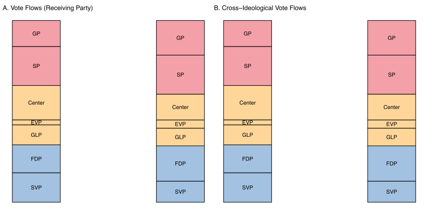
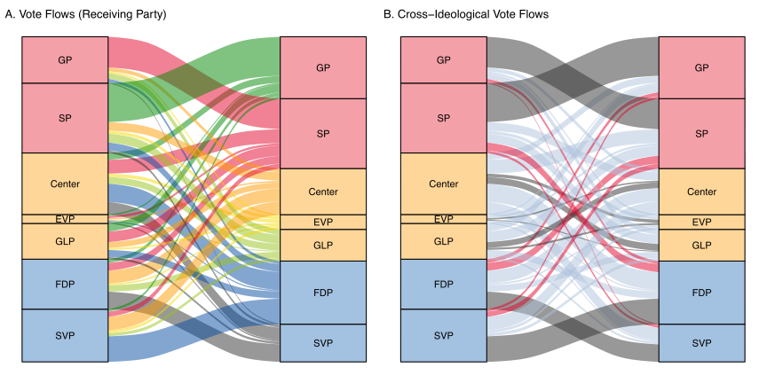
Note: Panel A: colored by receiving party. Panel B: gray = within-camp, light blue = center-left/right, red = cross-ideological (left↔right). We focus on the red flows. Appendix: Year-by-year flows
Results
Cross-Ideological Vote Splitting Over Time
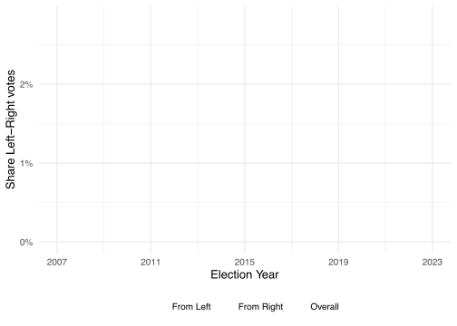
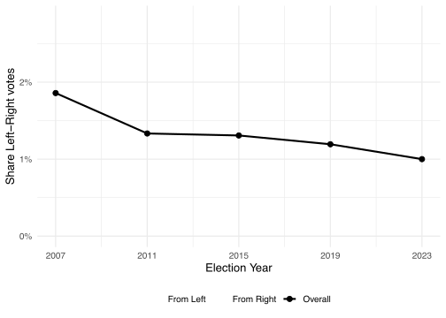
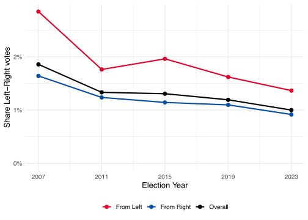
- Cross-ideological vote splitting declined from 1.7% (2007) to 0.9% (2023)
- Particularly pronounced among left-wing voters: 2.8% → 1.4%
Benchmarking: Affective Polarization
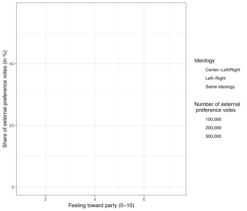
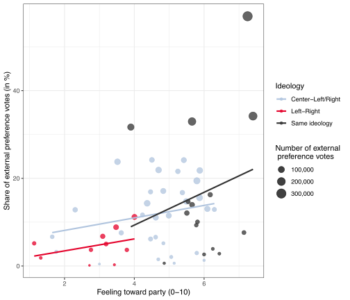
- Positive association between outparty feeling (CSES data) and external preference vote share
- 1 SD increase in outparty feeling ↔ 0.97 SD increase in external preference vote share
Benchmarking: Electoral-System Polarization
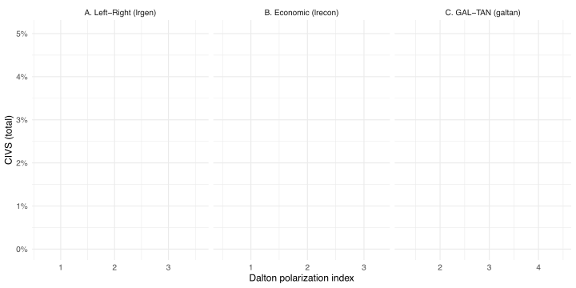

- Three dimensions: general left–right, economic left–right, GAL-TAN
- Consistently negative correlation: more cross-ideological voting where electoral-system polarization is lower
Correlates of Cross-Ideological Vote Splitting
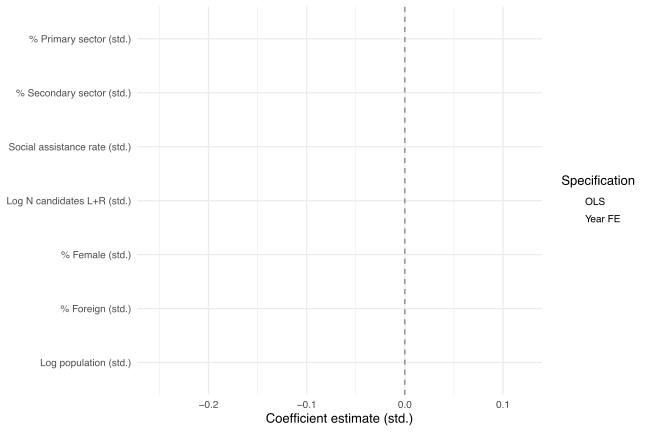
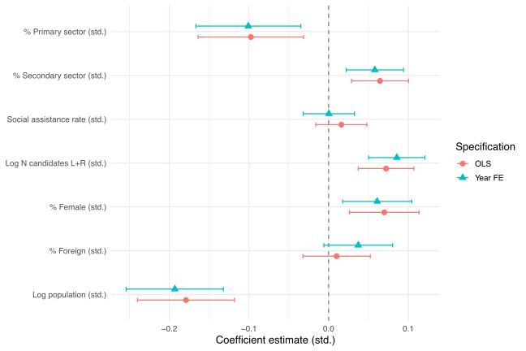
- More in: smaller municipalities, industrial communities, more candidates, higher share of women
- No association with: social assistance rate, share of foreigners
Conclusion
Key Findings
- Cross-ideological vote splitting exists but has declined over time (2007–2023), consistent with increasing polarization
- Geographic variation is systematic: more common in smaller municipalities, industrial communities, and where more candidates compete
- Our measure correlates meaningfully with both affective polarization and electoral-system polarization
Broader Implications
- Free-list systems can reveal cross-partisan behavior
- Vote splitting complements survey-based & party-positioning polarization measures
- Allows to scrutinize role of local social environments
Future Directions
- Candidate characteristics and cross-ideological appeal
- Role of local social networks
- Role of perception & in-group identities
Thank You!
Thomas Tichelbaecker · Lea Portmann
Appendix: Vote Flows by Year
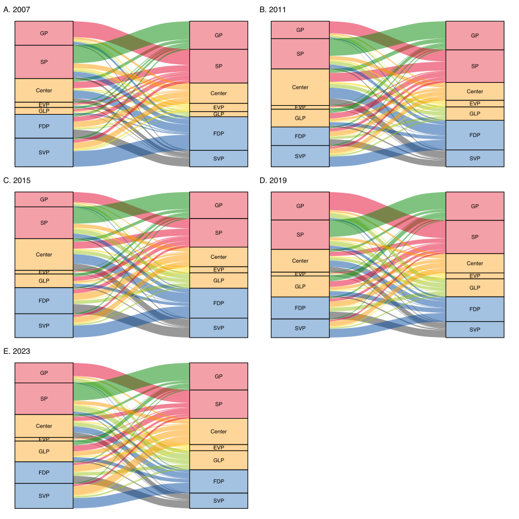
Appendix: CIVS Distributions
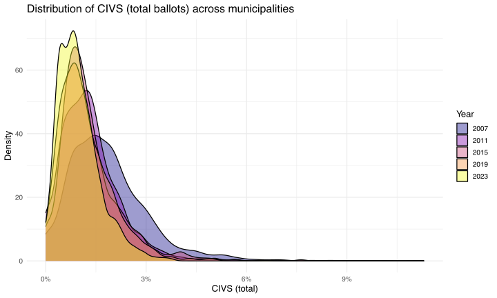
Appendix: Left vs. Right Voters
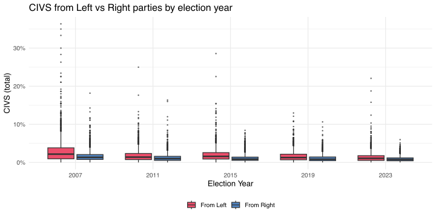
Appendix: Regression Validation
| Ext. pref. voteshare | ||
|---|---|---|
| (1) All dyads | (2) Cross-ideological | |
| (Intercept) | 0.625** | 0.296** |
| (0.186) | (0.100) | |
| Outparty feeling (std.) | 0.970*** | 0.320* |
| (0.176) | (0.129) | |
| N | 48 | 35 |
| R² | 0.398 | 0.156 |
| R² Adj. | 0.385 | 0.131 |
| RMSE | 1.25 | 0.75 |
+ p < 0.1, * p < 0.05, ** p < 0.01, *** p < 0.001. Standard errors: IID.
← BackAppendix: Party Matching (CHES 2019)
| Panaschierstatistik | CHES 2019 | LR Score | Status |
|---|---|---|---|
| BDP | BDP/PBD | 5.82 | Matched |
| CVP | CVP/PVC | 5.27 | Matched |
| EVP | EVP/PEV | 5.82 | Matched |
| FDP | FDP/PLR | 7.00 | Matched |
| GLP | GPL/PVL | 4.91 | Matched |
| GP | GPS/PES | 1.09 | Matched |
| SP | SP/PS | 1.36 | Matched |
| SVP | SVP/UDC | 8.73 | Matched |
| CSP, EDU, Lega, PdA, ... | — | — | Dropped |
Note: Smaller parties without CHES match are excluded from CHES-based analyses.
← BackAppendix: Bivariate Correlates
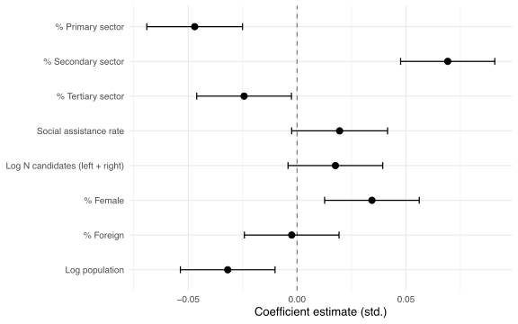
Appendix: Ideological Party Classification
| Politically Left | Politically Centrist | Politically Right | |||
|---|---|---|---|---|---|
| Grüne | GP | BDP | BDP | EDU | EDU |
| JUSO | SP | CVP | CVP | FDP | FDP |
| SP | SP | EVP | EVP | SVP | SVP |
| SP/JUSO | SP | GLP | GLP | Junge SVP | SVP |
| Die Mitte | Mitte | ||||
Note: Major parties and suborganizations if represented in national assembly. Smaller parties classified as "Other" are excluded.
← Back